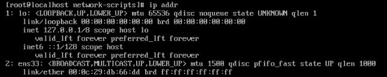
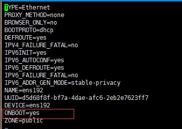
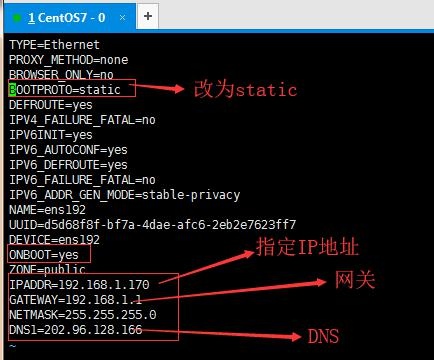

# Centos7 Minimal 安装后初始化配置
# 1:更新yum
yum upgrade
# 2: 安装基础命令
yum -y install vim* lrzsz gcc-c++ pcre pcre-devel zlib zlib-devel openssl openssl-devel
yum -y install telnet net-tools
安装ifconfig
yum provides ifconfig
1
2
3
4
5
2
3
4
5
# 3: 设置IP
ip addr

暂时未分配IP, 所以进行如下修改
# 3.1 分配随机IP
分配静态IP请看3.2
cd /etc/sysconfig/network-scripts
vim ifcfg-ens192
1
2
2

将ONBOOT=no修改为ONBOOT=yes保存退出 重启网络服务
service network restart
再次输入
ip addr
# 3.2: 设置静态IP

设置完,重启网络
service network restart
再次输入
ip addr
# 3:永久关闭Selinux
vim /etc/sysconfig/selinux
SELINUX=enforcing 改为 SELINUX=disabled
重启服务reboot